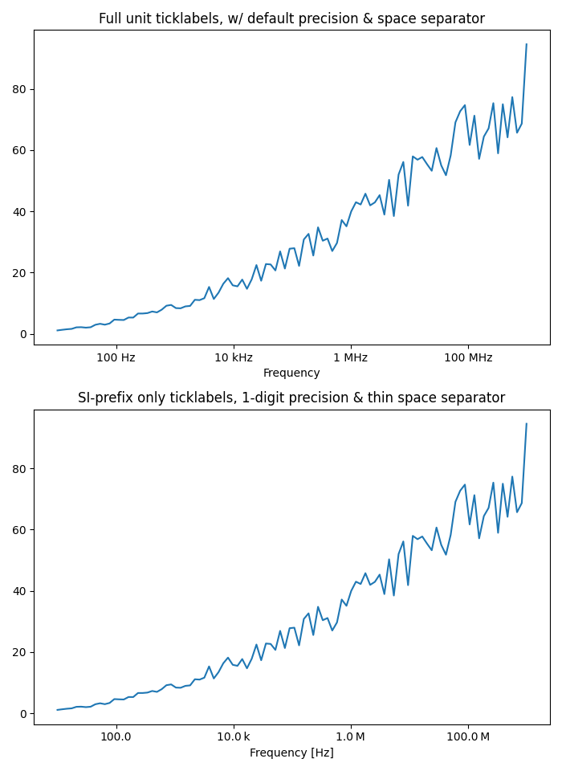

Version 3.1.1
Note
Click here to download the full example code
Use of the engineering Formatter.
import matplotlib.pyplot as plt
import numpy as np
from matplotlib.ticker import EngFormatter
# Fixing random state for reproducibility
prng = np.random.RandomState(19680801)
# Create artificial data to plot.
# The x data span over several decades to demonstrate several SI prefixes.
xs = np.logspace(1, 9, 100)
ys = (0.8 + 0.4 * prng.uniform(size=100)) * np.log10(xs)**2
# Figure width is doubled (2*6.4) to display nicely 2 subplots side by side.
fig, (ax0, ax1) = plt.subplots(nrows=2, figsize=(7, 9.6))
for ax in (ax0, ax1):
ax.set_xscale('log')
# Demo of the default settings, with a user-defined unit label.
ax0.set_title('Full unit ticklabels, w/ default precision & space separator')
formatter0 = EngFormatter(unit='Hz')
ax0.xaxis.set_major_formatter(formatter0)
ax0.plot(xs, ys)
ax0.set_xlabel('Frequency')
# Demo of the options `places` (number of digit after decimal point) and
# `sep` (separator between the number and the prefix/unit).
ax1.set_title('SI-prefix only ticklabels, 1-digit precision & '
'thin space separator')
formatter1 = EngFormatter(places=1, sep="\N{THIN SPACE}") # U+2009
ax1.xaxis.set_major_formatter(formatter1)
ax1.plot(xs, ys)
ax1.set_xlabel('Frequency [Hz]')
plt.tight_layout()
plt.show()
Keywords: matplotlib code example, codex, python plot, pyplot Gallery generated by Sphinx-Gallery